关于我的摄影与初心
我想我的眼睛已经看到了世界上最美丽的东西，我需要一个东西的存在，来帮我记住我所见的美好，留给老了的自己来回味
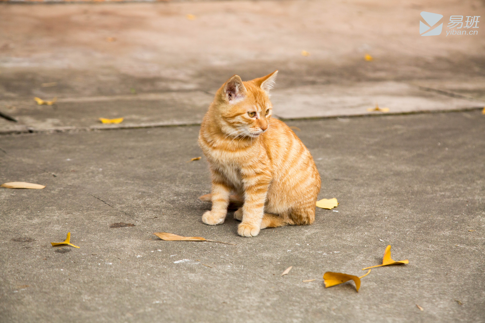 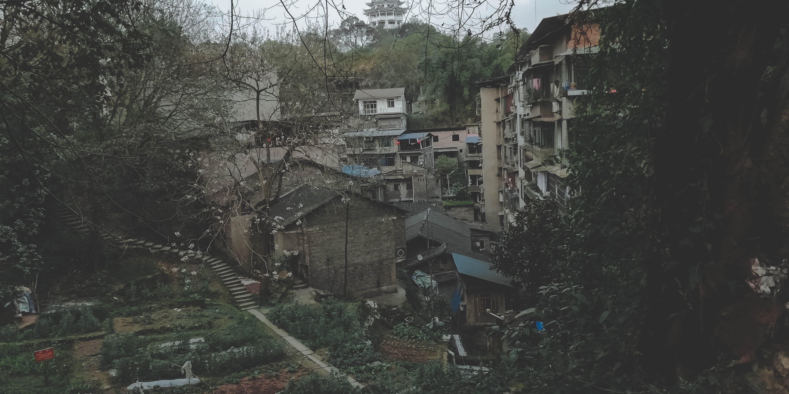 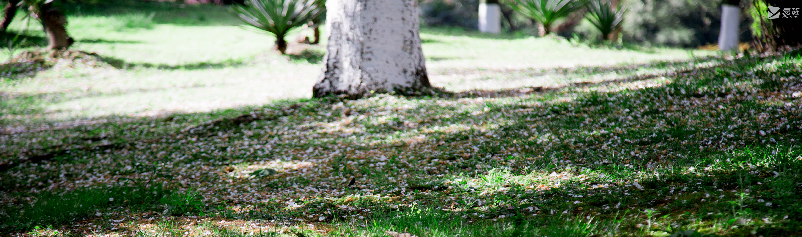 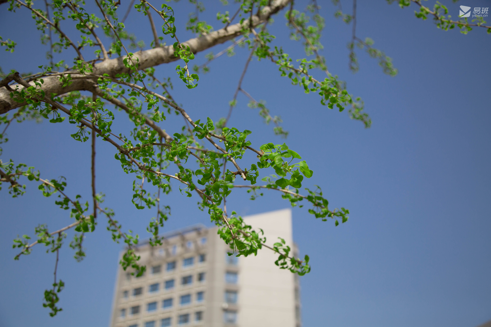
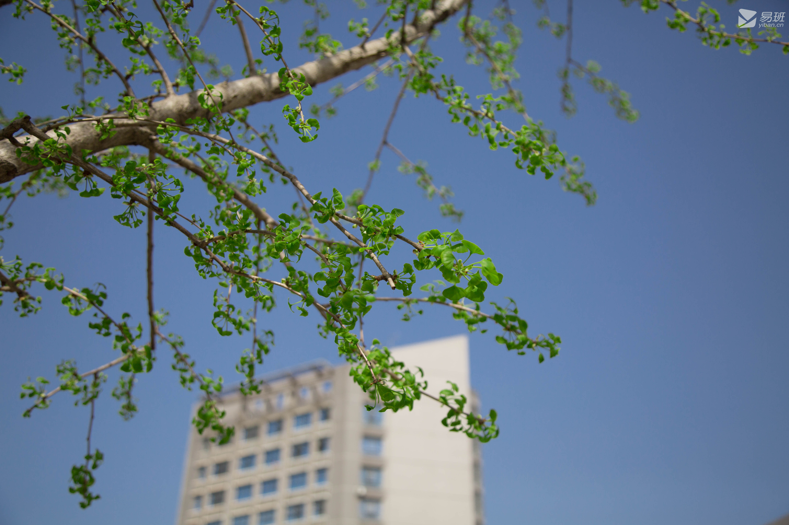
一个人时最常听的歌
-
 Break My Heart Again-FINNEAS
Break My Heart Again-FINNEAS
如果在冬天听到这首歌，请你一定要记得握一杯热咖啡......
-
 Let's Fall in Love for the Night (Explicit) - FINNEAS
Let's Fall in Love for the Night (Explicit) - FINNEAS
抱着吉他在舞台上唱着这首歌的他太帅了，随意舞蹈的步子，唱着这款舒心的歌曲，欢迎你也听一下......
-
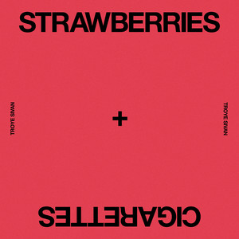
Strawberries & Cigarettes - Troye Sivan (特洛耶·希文)
Remember when we first met, you said light my cigarette, so I lied to my mom and dad, and jumped the fence and I ran ,but we couldn't go very far
-
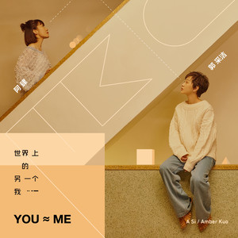
世界上的另一个我 - 阿肆/郭采洁 (Amber Kuo)
偶尔也会幻想一下，世界上会不会真的有另外一个自己呢？“上一秒我在台北看烟火，下一秒你在上海喝Mojito，你感觉我 就像我感觉你，世界上的另一个我”
-
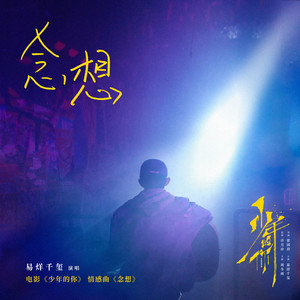
念想(《少年的你》电影情感曲) - 易烊千玺
少年的你，如此美丽。陈念与小北互相守护了彼此
-
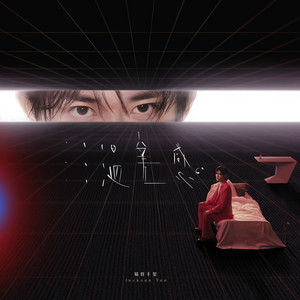
陷落美好 - 易烊千玺
完成我们美好的陷落，在旋转的星空，绚烂地失重，终于我们美好的陷落，你在我的怀中 宇宙才完整......
偶尔也会看看电影
-
只有芸知道
改编自冯小刚挚友的真实爱情经历，讲述了隋东风和罗芸之间相濡以沫的动人爱情故事。但罗芸隐藏了一个只有她知道的秘密，秘密的背后却是她对隋东风刻骨铭心的爱……
-
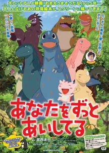
你看起来很好吃
哈特是一只被草食性恐龙养大的霸王龙。
其实，早在它破壳而出时，草食性恐龙的首领就曾命令哈特的母亲抛弃它，但母亲却最终还是偷偷把它养大。随着年龄的增长，每天只吃野果的哈特每天饥饿难耐，最终还是抵不住本能的驱使，开始了自己食肉的残暴生涯。然而，由于母亲的影响，在哈特的内心深处，始终涌动着一颗善良的心灵。
一天，偶尔遇到一只破壳而出的食草恐龙宝宝，哈特阴差阳错的被恐龙宝宝误认为是“爸爸”，而且为小恐龙取名为“很美味”，自此开始了又一段奇异的恐龙父子情。
然而，伴随着生存环境的恶化，恐龙们的生存遭受着前所未有的破坏，哈特和它的亲人最终能否经得起考验……
-
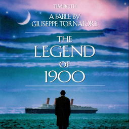
海上钢琴师
本片讲述了一个钢琴天才传奇的一生。 1900年，Virginian号豪华邮轮上，一个孤儿被遗弃在头等舱，由船上的水手抚养长大，取名1900（蒂姆•罗斯 饰）。1900慢慢长大，显示出了无师自通的非凡钢琴天赋，在船上的乐队表演钢琴，每个听过他演奏的人，都被深深打动。爵士乐鼻祖杰尼听说了1900的高超技艺，专门上船和他比赛，最后自叹弗如，黯然离去。
可惜，这一切的事情都发生在海上，1900从来不愿踏上陆地，直到有一天，他爱上了一个女孩，情愫在琴键上流淌。他会不会为了爱情，踏上陆地开始新的生活，用他的琴声惊艳世界？他将怎样谱写自己非凡的人生。
-
波西米亚狂想曲
本片是对皇后乐队、传奇主唱弗雷迪·莫库里以及他们音乐的致敬盛宴，这是一段充满爱、痛苦、接纳和音乐的旅程。
弗雷迪·莫库里（拉米·马雷克 饰）曾是希思罗机场的一名普通搬运工，对音乐满腔热血的他，与布莱恩·梅（格威利姆·李 饰）、罗杰·泰勒（本·哈迪 饰）、约 翰·迪肯（约瑟夫·梅泽罗 饰）组成皇后乐队。这个殿堂级乐队的从无到有，从疏离到重聚，从低谷到巅峰，仿佛就是弗雷迪一生的缩影。在最后的日子里，弗雷迪做了生命中最重要的决定——在音乐史上最伟大的“拯救生命”大型摇滚乐演唱会上，将所有热血付诸于歌声。
-
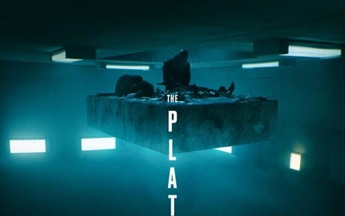
饥饿站台
在未来的反乌托邦国度中，囚犯们被关押在垂直堆叠的牢房里，饥肠辘辘地看着食物从上层落下，靠近顶层的人吃得饱饱的，而位于底层的人则因饥饿而变得激进。
由加尔德·加斯特卢-乌鲁希亚执导的《饥饿站台》是一部扭曲的社会寓言，讲述了人类最黑暗和最饥渴的一面。
-
楚门的世界
楚门（金•凯瑞 Jim Carrey 饰）是一个平凡得不能再平凡的人，除了一些有些稀奇的经历之外——初恋女友突然失踪、溺水身亡的父亲忽然似乎又出现在眼前，他和绝大多数30多岁的美国男人绝无异样。这令他倍感失落。他也曾试过离开自己生活了多年的地方，但总因种种理由而不能成行。
直到有一天，他忽然发觉自己似乎一直在被人跟踪，无论他走到哪里，干什么事情。这种感觉愈来愈强烈。楚门决定不惜一切代价逃离这个他生活了30多年的地方，去寻找他的初恋女友。
但他却发现自己怎样也逃不出去。真相其实很残忍。
时光里的书籍剪影
-
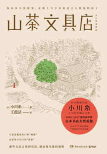
山茶文具店
在镰仓，有一家帮人代笔的文具店，每代店主均由女性担任，只要有委托便会接受，即使是餐厅的菜单也会帮忙。
不知不觉间，雨宫鸠子成为了第11代传人，而与外祖母之间的误会，以及开始独自一人活在世上的恐惧，使她充满迷茫。给死去宠物的吊唁信、宣布离婚的公告信、拒绝借钱的回绝信、写给挚友的分手信……
一封封代笔信是客人们的写实生活，也是一节节人生的课堂。
-
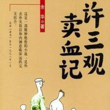
许三观卖血记
《许三观卖血记》是余华1995年创作的一部长篇小说，它以博大的温情描绘了磨难中的人生，以激烈的故事形式表达了人在面对厄运时求生的欲望。小说讲述了许三观靠着卖血渡过了人生的一个个难关，战胜了命运强加给他的惊涛骇浪，而当他老了，知道自己的血再也没有人要时，精神却崩溃了。
-
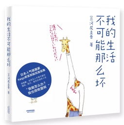
我的生活不可能那么坏
你也许正在经历或曾经经历这样的生活，被闹钟吵醒、坐上拥挤的地铁、纠结每天的午饭、做着午后的白日梦、偶尔回忆起某个时刻……不得不承认，生活正是由那些微不足道的细节组成，无论那是开心的、痛苦的还是尴尬的。
生活远没有我们想象得那么好，但也没有那么坏。Keigo君用画笔记录下这些寻常生活里的尴尬时刻，再加上一点比常人更大的脑洞。
-
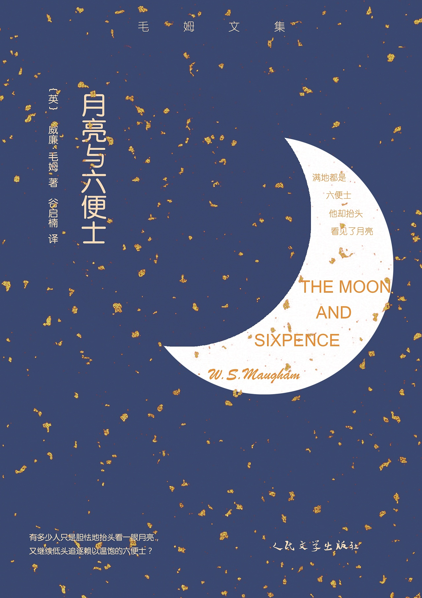
月亮与六便士
“满地都是六便士，他却抬头看见了月亮。”
银行家查尔斯，人到中年，事业有成，为了追求内心隐秘的绘画梦想，突然抛妻别子，弃家出走。他深知：人的每一种身份都是一种自我绑架，唯有失去是通向自由之途。
在异国他乡，他贫病交加，对梦想却愈发坚定执着。他说：我必须画画，就像溺水的人必须挣扎。
在经历种种离奇遭遇后，他来到南太平洋的一座孤岛，同当地一位姑娘结婚生子，成功创作出一系列惊世杰作。就在此时，他被绝症和双目失明击倒，临死之前，他做出了让所有人震惊的决定……
人世漫长得转瞬即逝，有人见尘埃，有人见星辰。查尔斯就是那个终其一生在追逐星辰的人。